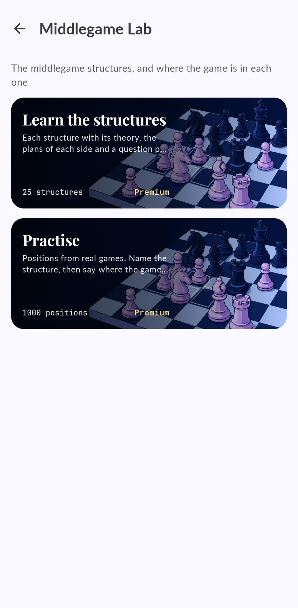

Chess pawn structures: the 25 that decide the middlegame
When the opening theory runs out, the pawns tell you what to do.

Why pawn structures matter
Pieces move around; pawns stay.
The 25 structures
| Structure | How to recognise it |
|---|---|
| The Benko structure | Black plays with no pawns on the a- and b-files. |
| The asymmetric Benoni | A white pawn on d5 locked against the black pawn on d6, with c5 beside it and a black bishop fianchettoed on g7. |
| The symmetrical Benoni | White pawns on c4 and d5 against Black's on c5 and d6, with the d-file locked. |
| The Carlsbad structure | White with pawns on d4 and e3 and a kingside majority; Black with c6, d5 and a queenside majority. |
| The Caro-Kann formation | White pawns on c3 and d4, Black pawns on c6 and e6. |
| The French chain | Two pawn chains locked head to head. |
| The traded centre in the French | White pawns on c3 and d4, Black pawns on c6 and d5, and the e-pawns already traded. |
| The French with f6 | White has a d4 pawn with no neighbours on the c- or e-files, stopped by the black pawn on d5. |
| The Grünfeld centre | White pawns on c3, d4 and e4, with no white pawn left on the b-file. |
| Hanging pawns | Two pawns side by side on c5 and d5, no neighbours and nothing in front of them. |
| The Hedgehog | Black pawns on a6, b6, d6 and e6, no c-pawn, and the castled pawns untouched on f7, g7 and h7. |
| The isolated queen pawn | A pawn on d4 with no neighbours on the c- or e-files, facing a black pawn on d5 or an empty square. |
| The small c6 and d6 centre | White has pawns on c4 and e4 and none on the d-file; Black has c6 and d6 and none on the e-file. |
| The open centre after the trade | A black pawn on e5 facing White's c4 and e4 pawns, with the d-file empty of pawns. |
| The d5 against e5 chain | White pawns on c4, d5 and e4 against black pawns on c7, d6 and e5. |
| The e5 and f5 duo | A locked centre. |
| The race on both wings | Locked centre. |
| The majority that makes a passer | One side has more pawns on one wing than the other. |
| The Maróczy bind | White pawns on c4 and e4 that take b5 and d5 away from Black. |
| The d5 wedge | A white pawn on d5 locked against Black's d6 pawn, with another black pawn on e5. |
| The Scheveningen small centre | Black keeps the pawns on d6 and e6 side by side and unadvanced. |
| The d5 square in the Sicilian | Black has pawns on d6 and e5 and has already traded the c-pawn. |
| The Slav formation | White has d4 and e3 and is left with no c-pawn. |
| The Closed Spanish | White pawns on c3, d3 and e4; Black pawns on a6, b5, c5, d6 and e5. |
| The Stonewall | Pawns on c6, d5, e6 and f5 forming a wall on the light squares. |
How to practise them in Chess Coach
- Learn the structure.
- Recognise it in real games.
- Play it.

What is free
The d5 square in the Sicilian is free.
Questions
What are the most important pawn structures in chess?
The isolated queen pawn, hanging pawns and the Carlsbad structure.
What is the plan against an isolated queen pawn?
Blockade it, trade pieces and target it in the endgame.
Do I need to know openings to understand structures?
No. It works the other way round.